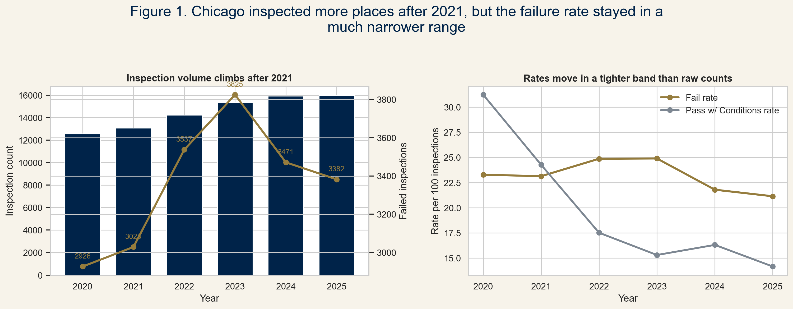
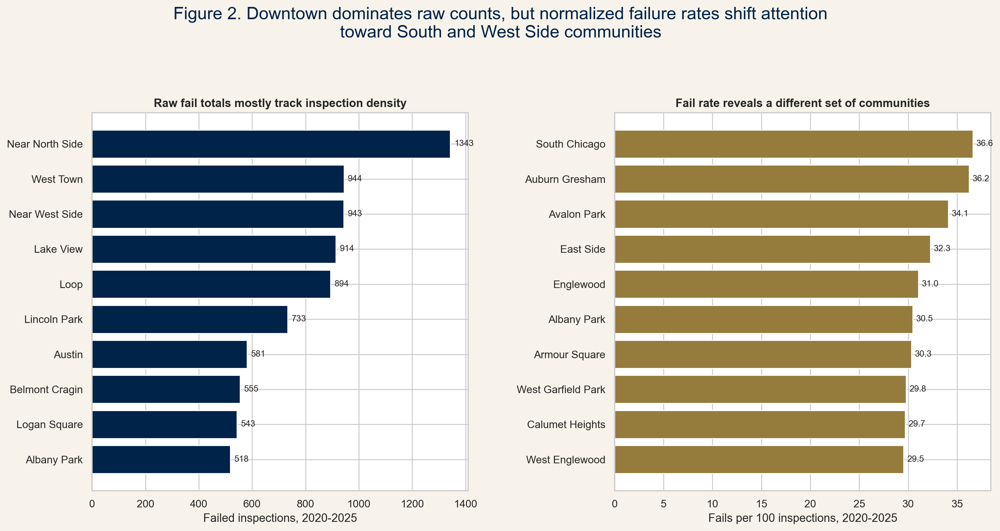
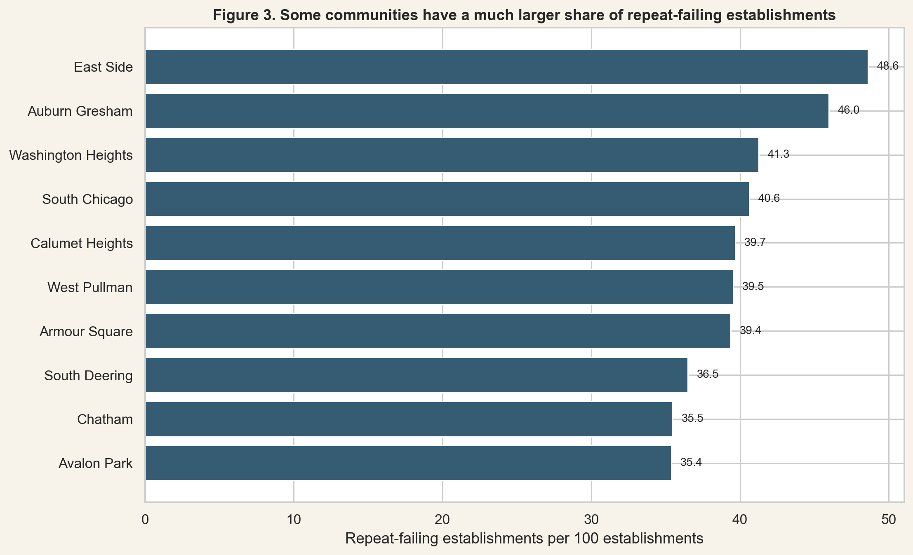
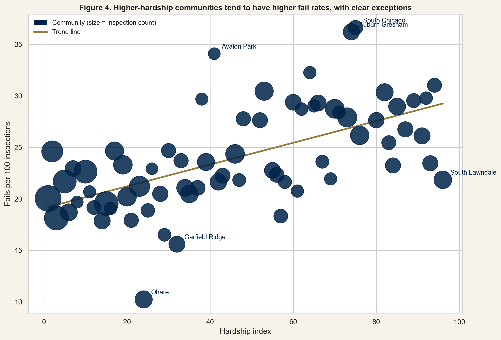
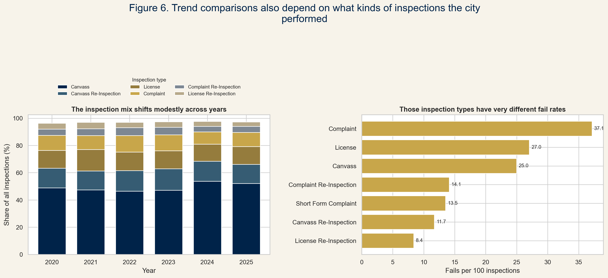

The question
Failed inspections are easy to count. They are harder to compare. A neighborhood with many restaurants will usually have more inspections, and more inspections create more chances to fail.
So we read the data two ways. First, where did Chicago record the most failures? Second, where did inspections fail most often after inspection volume is counted?
food inspections used after cleaning
failed inspections from 2020 to 2025
citywide fail rate across the study period
community areas kept for rate comparison
Data and limits
These records show inspection outcomes, not every kitchen condition in Chicago.
We start with City of Chicago food inspection records. Then we use the coordinates to place each inspection inside a community area. After that, we compare raw failed inspections with failures per 100 inspections.
A failure rate here means failed inspections per 100 inspections. It is not a rate per resident, per meal, or per restaurant. To avoid tiny-denominator noise, the rate comparison keeps community areas with at least 300 inspections from 2020 to 2025.
The hardship index is context, not a cause. A high hardship score does not explain a failed inspection by itself. It tells us whether the high-rate communities also have higher levels of economic and social hardship.

The first turn
Near North Side leads the count. It does not lead the rate.
Near North Side has 1,343 failed inspections, more than any other community in the raw ranking. West Town, Near West Side, Lake View, and the Loop follow close behind. These are busy restaurant areas, so the raw count starts there.
The rate ranking points somewhere else. South Chicago reaches 36.6 failed inspections per 100 inspections. Auburn Gresham is almost the same at 36.2. Avalon Park is also high at 34.1. These communities are easy to miss if the story stops at raw counts.

A raw leaderboard sends us downtown. A rate leaderboard sends us south and west.
The map
The rate map makes the reversal visible.
The ranking change lands on the map. The strongest rates are not clustered around the same downtown communities that dominate the raw totals.
What to notice
South Chicago, Auburn Gresham, Englewood, West Garfield Park, and West Englewood stand out here. Not every South or West Side community looks the same, but the high-rate map clearly moves away from downtown.
Mapped rate view
Hovering gives the exact values. Even without hovering, the main point is clear: this is not a map of restaurant volume.
The second check
East Side makes the problem look persistent, not random.
A high fail rate could come from one bad period. Repeat failures are harder to wave away because they ask whether the same establishments fail again.
East Side has the highest repeat-failure share, at 48.6 repeat-failing establishments per 100 establishments. Auburn Gresham, Washington Heights, South Chicago, and Calumet Heights also sit near the top. That makes the pattern harder to treat as noise.


Inspection mix
Complaint inspections fail far more often than routine canvass inspections.
The city does not perform the same inspection mix every year. Canvass inspections make up the largest share, but complaint inspections fail at 37.1 per 100 inspections. License re-inspections fail at only 8.4 per 100.
That matters because a yearly trend can shift when the inspection mix shifts. A year with more complaint inspections is not directly comparable to a year dominated by routine canvass inspections.

The time layer
The monthly view keeps returning to the same parts of the city.
The animation shows failed inspections month by month from 2020 to 2025. It answers a practical question: are these places only hot once, or do they keep coming back?
What to notice
The intensity changes from month to month. The concentration does not disappear.
Animated time view
The same clusters keep coming back. They are not present every month at the same strength, but they do not vanish either.
Takeaway
The most checked places are not the places we would worry about first.
If we only count failed inspections, we end up downtown: Near North Side, West Town, Near West Side, Lake View, and the Loop. But that is mostly where Chicago inspects a lot of restaurants. Once we divide by inspection volume, the places we would look at first are South Chicago, Auburn Gresham, Avalon Park, East Side, and Englewood.
That is the conclusion of the project. The raw dataset makes downtown look like the center of the problem. The adjusted data says the sharper food-safety concern is in communities where inspections fail more often, and in some cases fail again at the same establishments.